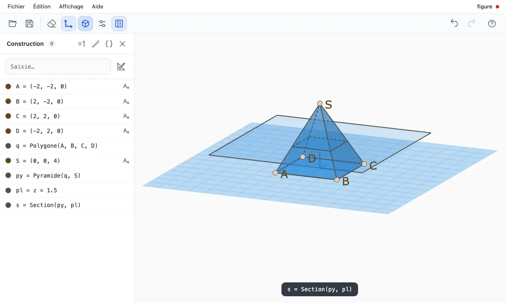

La 3D

Passer en 3D
- Une nouvelle figure est plane. Vue 3D fait basculer la caméra : le plan de la figure devient le sol z = 0, le repère un trièdre. Un second appui revient au plan, avec le repère d’avant.
-
Le retour au plan est refusé tant qu’un objet sort du plan
z = 0 ; la consigne le nomme. Inversement, une
figure plane refuse tout objet de l’espace (
A = (1, 2, 3), sphère…). - Chaque bascule est une étape d’annulation.
- Les figures 3D de DGPad, aux points libres dans le plan de l’écran, n’ont pas ce bouton.
Vue
- Tourner : bouton droit, ou un doigt dans le vide. Déplacer : bouton gauche dans le vide. Zoom : molette.
- Écartez deux doigts pour agrandir la figure, rapprochez-les pour la réduire. Glissez les deux doigts ensemble pour déplacer la vue.
- P : perspective ou projection parallèle ; S : sol. Mêmes réglages dans l’onglet Figure.
- Les parties cachées (arêtes, cercles, droites sous le sol ou derrière une face) sont en pointillés.
Construire
-
Un clic dans le vide crée un point sur le sol (palette
ouverte, avec l’outil Point) ; au clavier,
S = (0, 0, 4). - La palette gagne les familles Plans et Solides et deux cercles ; l’anneau d’un point propose la sphère.
- Les symétries, rotations, homothéties et translations transforment aussi un plan, une sphère ou un polyèdre (Transformer un objet).
-
Tout outil qui attend un plan accepte le
sol : un plan
z = 0caché est créé, puis réutilisé. -
Les formules lisent les trois coordonnées :
d(A, B)est la distance dans l’espace.
| Objet | Commande |
|---|---|
| Plan |
Plan(A, B, C),
Plan(A, d),
PlanParallèle(A, p),
PlanOrthogonal(A, d),
p = x + y + z = 3
|
| Perpendiculaire à un plan | Perpendiculaire(A, p) |
| Sphère |
Sphère(O, A),
Sphère(O, r)
|
| Cercles |
Cercle(d, P) d’axe d ;
Cercle(O, r, d) orthogonal à la
droite d ou parallèle au plan d
|
| Solides |
Cylindre(A, B, r),
Cône(A, B, r),
Cube(A, B, C),
Prisme(p, P),
Pyramide(p, S)
|
| Section |
Section(s, p) : cercle, conique ou
polygone
|
| Patron |
Patron(c, f), f de 0 (plié) à 1 (à
plat)
|
| Intersections |
Intersection(d, p) point,
Intersection(p, q) droite,
Intersection(s, t) cercle de deux
sphères, Intersection(d, s, n)
point (n = 1 ou 2) d’une droite et d’une sphère,
d’un cylindre ou d’un cône
|
| Sommets | Sommet(c, k), k à partir de 1 |
| Faces | Face(k, n), n à partir de 1 |
Solides
- Faces : un outil qui attend un plan ou un polygone, ou qui pose un point, prend la face visible sous le pointeur (commandes). L’outil Intersection prend aussi une droite et un plan ou un polygone.
- Un solide est un seul objet : il dessine faces, arêtes (pointillées derrière) et cache ce qui est derrière lui. Il se désigne à l’intérieur de son contour.
-
Cube en deux clics : deux points d’un même
plan ou polygone donnent
Cube(A, B, p, ±1), du côté tourné vers la caméra ; deux points de même cote donnentCube(A, B, 1), au-dessus (−1 : au-dessous). Sinon l’outil attend un troisième point. Le cube devient indéfini si [AB] cesse d’être parallèle au plan. - L’outil Section prend le solide et le plan dans n’importe quel ordre.
- L’outil Intersection prend une droite et une sphère, un cylindre ou un cône, dans n’importe quel ordre : il crée les deux points où la droite perce la surface. Un clic près de l’un d’eux ne crée que celui-là.
-
Un curseur en second argument de
Patronanime le dépliage :f = Curseur(0, 1, 0),n = Patron(c, f).